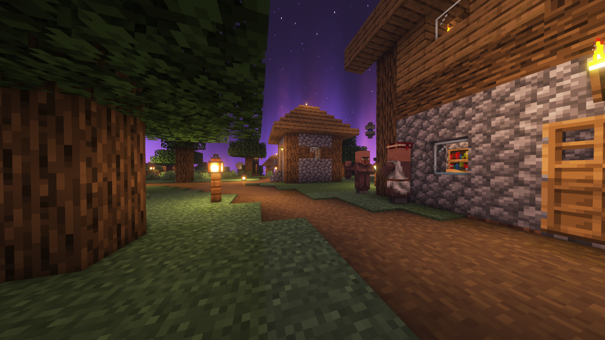
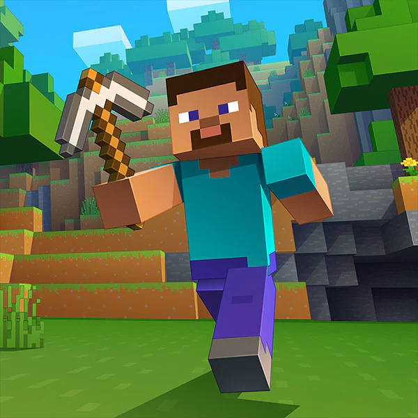
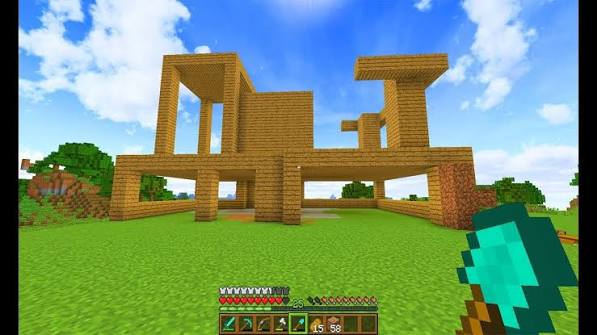
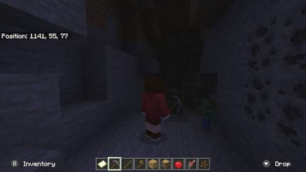

Exploração e Construção
O mundo é gerado de forma procedural (infinito) e composto por blocos que podem ser minerados, coletados e usados para construir desde simples abrigos até cidades inteiras.

Minecraft é um jogo eletrônico do gênero sandbox (mundo aberto) de sobrevivência e construção com blocos, criado por Markus "Notch" Persson em 2009 e lançado oficialmente pela Mojang Studios em 2011. Atualmente é o jogo mais vendido da história, com mais de 400 milhões de cópias comercializadas.

O mundo é gerado de forma procedural (infinito) e composto por blocos que podem ser minerados, coletados e usados para construir desde simples abrigos até cidades inteiras.



Em 2009, o criador do jogo (Notch) estava tentando programar o modelo de um porco, mas inverteu sem querer as variáveis de altura e comprimento na modelagem. O corpo ficou vertical, ele achou bizarro e resolveu colocar uma textura verde e fazê-lo explodir.
Os sons assustadores que o Enderman emite são, na verdade, vozes humanas dizendo frases como "Hi" (Oi), "Hello" (Olá), "What's up?" (E aí?) e "Look for the eye" (Procure pelo olho), mas distorcidas, desaceleradas e tocadas de trás para frente.
O jogo tem um easter egg muito raro no código. Sempre que você abre o Minecraft, há uma probabilidade minúscula de que as letras do título principal se embaralhem na tela de carregamento, trocando o "e" e o "i" de lugar.
Notch queria criar um submundo infernal e perigoso e usou a estética de DOOM como base, o que explica os sons de choro dos Ghasts (que por sinal, foram gravados do gato de estimação do sonoplasta do jogo enquanto ele acordava de um cochilo).
Notch se inspirou no jogo Infiniminer, que também era um jogo de construção com blocos, para criar o conceito de Minecraft. Ele queria expandir a ideia de exploração e construção em um mundo aberto.